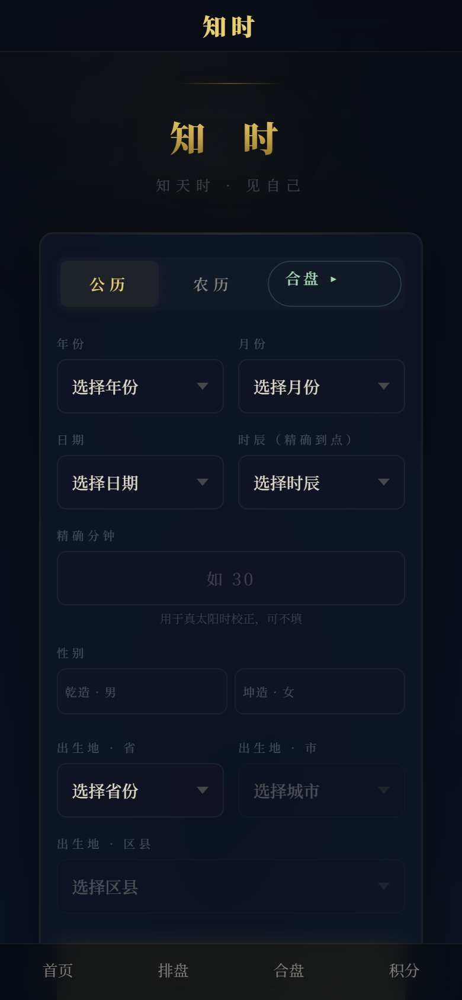

知 时
知 天 时 · 见 自 己
千年东方易学智慧
AI 辅助解读 · 引经据典
第一步：信息输入
公历 / 农历双模式 · 真太阳时自动校正 · 寿星万年历数据

第二步：四柱排盘
年柱以立春为界 · 月柱依节气而定 · 日柱精确计算 · 时柱五鼠遁法
年
年柱
甲申
立春分界 · 2004甲申年
→
月
月柱
丁卯
节气定月 · 惊蛰后卯月
→
日
日柱
丙午
公式推算 · 60甲子定位
→
时
时柱
癸巳
五鼠遁时 · 巳时定癸巳
十神分析
藏干计算
纳音匹配
神煞标注
第三步：旺衰量化评分
得令 · 得地 · 得势 · 调候 —— 综合评分判定日主强弱
得令
+20
得地
+12
得势
+10
调候
+5
102
分
身强
五行生克关系
木
火
土
金
水
—— 相生：木→火→土→金→水→木
--- 相克：木→土→水→火→金→木
格局：偏印格
喜：水木
忌：金土
AI 易学助手
融合传统子平法与盲派体系 · DeepSeek 驱动 · 白话/深度双模式
我的喜用神是什么？
你的日主为丙火，生于卯月（春木），综合评分102分，属于
身强
。格局为偏印格。喜神：水、金、土，用神：水、金。忌神：木、火。
今年运势怎么样？
当前行乙巳大运（34岁），2026丙午流年。大运与流年皆为火，比劫帮扶过旺，今年注意理财和人际关系，但火旺也主热情和行动力……
格局判定
喜用忌神
大运流年
引据经典
白话解读
知 时
知天时 · 见自己
即刻开启你的易学探索之旅
※ 仅供传统文化学习参考与娱乐交流
※ 本内容仅供传统文化学习参考与娱乐交流，不构成任何决策建议